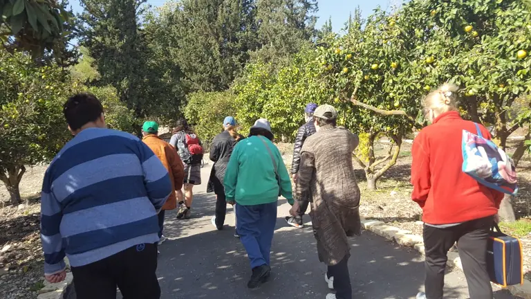

הסיפור שלנו
כמעט 70 שנה של בית
מעון פרטי ותיק בנס ציונה, הפועל בפיקוח משרד הרווחה והביטחון החברתי.
-
1957
סנטוריום נס ציונה
המשפחות שטיינהרט, רשו וקוגן מניחות את אבן הפינה למקום שיהפוך לנווה האירוס.

-
2021
אגף חדש נפתח
חדרים חדשים, חללים משותפים ותאורת „שמיים” בתקרה — אגף שתוכנן במיוחד לצורכי הדיירים.

-
היום
מעל 100 דיירים ודיירות
בתוך המעון ובבתים בקהילה, כולל מסגרת לצעירים על הרצף האוטיסטי.



- 1957שנת הקמה
- 100+דיירים ודיירות
- 3מסגרות מגורים
- 2שלוחות בקהילה